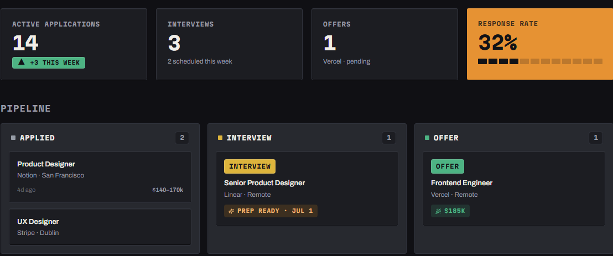

01 Full-stack + AI · Solo build
Hunted is a live, full-stack job-application tracker with AI interview prep that's actually grounded in your résumé. I designed and built it solo, end to end — this page is the story of how it works, and why the decisions in it hold up.

Status
LIVE
deployed & running today
Built by
Solo
design → ship, end to end
Languages
EN / AR
fully mirrored, real RTL
01 The problem
Most people run a job search across a spreadsheet, a dozen browser tabs, and a notes app — and the moment it actually matters, the night before an interview, the "AI prep" available to them is a canned script that's never seen their résumé or the job description in front of them. Hunted treats the search itself like the thing being tracked: a real pipeline from Applied to Offer, and interview prep that's grounded in the résumé you actually uploaded and the role you're actually applying to — not a generic template.
02 What I built
A Next.js web app, a NestJS API, Postgres, and a background job layer, wired to Anthropic's Claude for interview prep that reads the actual résumé and the actual job posting before it writes a word. It has real authentication security, real asynchronous processing for anything slow, and a bilingual interface that fully mirrors itself in Arabic — and it's deployed and running right now, not sitting behind a git clone waiting to be demoed.
Kanban drag, AI prep, and the EN/AR switch — live
03 Under the hood
Sessions that can't be replayed
If a refresh token is ever stolen and reused, the entire session is shut down automatically — not just quietly ignored.
Opaque, rotating refresh tokens hashed at rest. Replaying a token that's already been rotated revokes its whole token family — a theft-detection pattern most side projects skip entirely.
AI prep that knows when to re-think itself
Interview prep is grounded in your real résumé and the real job post — and the paid AI call only re-runs when something that actually matters has changed.
Prep is cached by a hash of the job, the company, and the active résumé. Switching which résumé is primary busts exactly the right cached sessions automatically, at zero wasted API cost on identical re-generates.
Two languages, one layout — properly
Arabic isn't a translated string table bolted onto an English layout — the interface itself mirrors, down to reading direction.
Full EN/AR coverage driven by logical CSS properties, so the whole layout flips rather than just the text — verified against real Arabic UI, not machine-translated placeholders.
Shipped, not just demoed
This isn't a project waiting for someone to run it locally — it's a deployed product with the operational basics a real business needs.
CI on every change, structured logs with per-request tracing, rate limiting, live error monitoring, and background jobs you can watch process in real time.